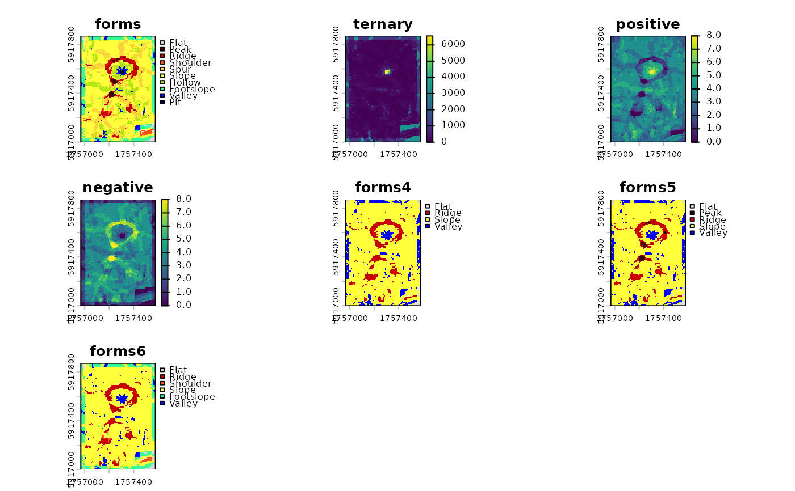

Apply a forms_matrix to Positive and Negative Overlooks
Source: R/forms_matrix.R
forms_matrix_apply.RdThis function applies a forms_matrix to reclassify a SpatRaster object with
2 layers containing positive and negative overlooks.
Usage
forms_matrix_apply(
x,
rcl = forms_matrix_get(),
positive = "positive",
negative = "negative",
...
)Arguments
- x
SpatRaster containing two layers with names specified in
positiveandnegative.- rcl
forms_matrix. Matrix to use for classification of x. Rows are "negative" and columns are "positive".
- positive
Character. Layer name of positive count. Default:
"positive".- negative
Character. Layer name of negative count. Default:
"negative".- ...
Additional arguments passed to
terra::classify().
Examples
library(terra)
library(rgeomorphon)
SEARCH = 7 # outer search radius (cells)
SKIP = 1 # inner skip radius (cells)
DIST = 0 # flatness distance (cells)
FLAT = 1 # flat angle threshold
MODE = "anglev1" # comparison mode
## classic volcano
data("volcano", package = "datasets")
dem <- terra::rast(volcano)
terra::crs(dem) <- terra::crs("EPSG:2193")
terra::ext(dem) <- c(1756968, 1757578, 5917000, 5917870)
names(dem) <- "elevation"
res <- geomorphons(
dem,
search = SEARCH,
skip = SKIP,
dist = DIST,
flat = FLAT,
comparison_mode = MODE,
forms = TRUE,
ternary = TRUE,
positive = TRUE,
negative = TRUE
)
res2 <- terra::rast(lapply(c(4, 5, 6), function(n) {
geomorphon_theme(
forms_matrix_apply(
x = res[[c("positive", "negative")]],
rcl = forms_matrix_get(n)
)
)
}))
names(res2) <- c("forms4", "forms5", "forms6")
terra::plot(c(res, res2))
